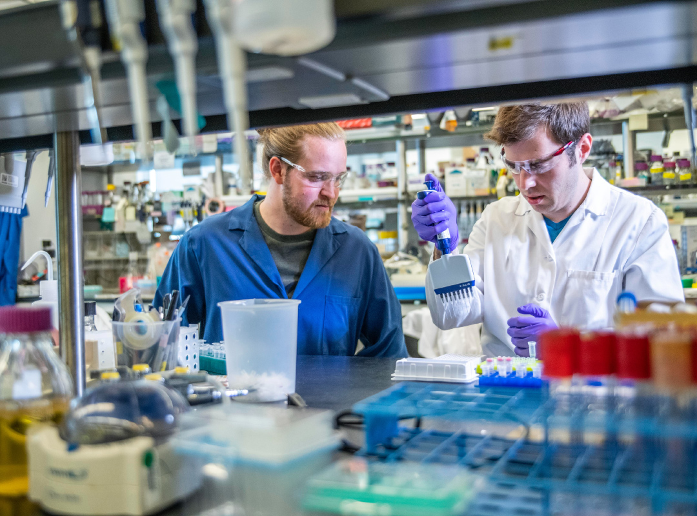

Desde que surgiu como espécie, o ser humano produz sua existência, isto é, fabrica instrumentos e ferramentas, constrói seus abrigos, indumentária, processa e armazena seus alimentos. Inclusive registra eventos e transfere saberes para a posteridade.
À medida que evolui, surgem novas atividades, advindas de necessidades de vida ou de práticas culturais que vão sendo incorporadas às novas gerações. Isso vale tanto para o que entendemos como necessidades para sobreviver quanto para todas as atividades advindas de nossas culturas (artes, ciências, crenças, etc.).
A técnica surge como propriedade humana de intervenção consciente no mundo para a produção da existência. É o fundamento do trabalho e um dos mais importantes traços que identificam nossa humanidade.
Neste sentido, cada ser humano executa um conjunto de técnicas em seu dia a dia. Compartilhamos com os outros o resultado dessa técnica – ou seja, os produtos da técnica – e, em troca, recebemos produtos da técnica de outras pessoas, de forma direta ou indireta.
1 / 3
Técnicos em química trabalhando
num laboratório de medicamentos

Figura 05
Fonte: Science in HD/Unsplash
2 / 3
Técnica em farmácia manipulando medicamentos

Figura 06
Fonte: This Engineering/Unsplash
3 / 3
Técnico em enfermagem aplicando medicamento em paciente
Figura 07
Foto: National Cancer Institute/Unsplash
❮
❯
Dessa forma, o trabalho pode ser compreendido como o exercício social da técnica, com todas as dimensões associadas ao ato técnico: éticas, estéticas, ambientais, econômicas, identitárias, culturais
Clique nos botões sobre a imagem para descobrir: